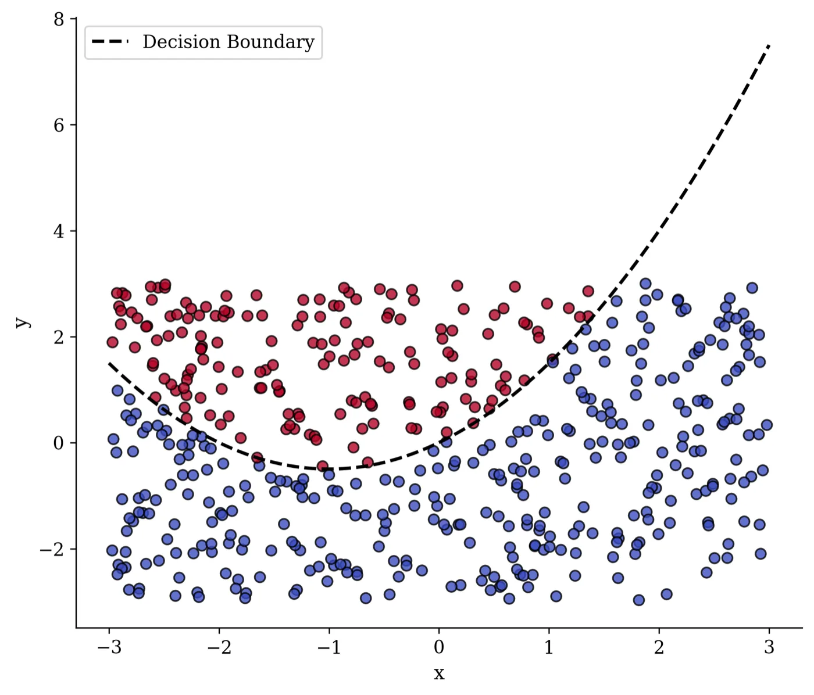

Word clustering and nonlinear classification
Two-part AI project: clustering words from three Gothic novels by how they appear together in sentences, and a controlled test of when a small neural network beats logistic regression on a curved boundary.
- Context
- MSc Data Science, University of Bristol (artificial intelligence)
- Year
- 2025
- Stack
- Python, NumPy, pandas, scikit-learn (hierarchical clustering, K-Means, logistic regression, MLP), matplotlib
- Status
- Complete
- Links
- Code on GitHub · Report (PDF)

- 0.198 Silhouette score Ward linkage, the best of the linkages tried; K-Means scored 0.149
- 0.967 Neural network F1 500 points, curvature 0.5
- 0.796 Logistic regression F1 Same dataset, where a straight boundary cannot follow the curve
Problem
Two questions: can meaningful groups of words be found from text with no labels at all, and when is a flexible model actually needed instead of a simple linear one?
Approach
For the words I combined Dracula, Frankenstein and The Picture of Dorian Gray, built a sentence-level co-occurrence matrix and compared hierarchical clustering with several linkage methods against K-Means. For classification I generated two-dimensional data with a curved class boundary and compared logistic regression with a small neural network while varying the curvature, the dataset size, the class imbalance and the network size.
Key decision: change one factor at a time
Each classification experiment varied a single thing, from boundary curvature between 0 and 3 to minority classes of 20% down to 8%, so a change in the result could be put down to that factor and not to a mix of them.
Results
Ward linkage gave the most coherent word groups, including clusters of character names and of existential and emotional words, although a silhouette score of 0.198 still means the clusters overlap. On the curved dataset the neural network followed the boundary that logistic regression could only approximate with a straight line.
| Model | Accuracy | Precision | Recall | F1 |
|---|---|---|---|---|
| Logistic regression | 0.873 | 0.787 | 0.804 | 0.796 |
| Neural network | 0.980 | 0.978 | 0.957 | 0.967 |
Limitations and next steps
- A silhouette of 0.198 is weak separation, so the word clusters are best read as themes rather than clean categories.
- Three novels is a small corpus; embeddings trained on more text would be a fairer test of the idea.